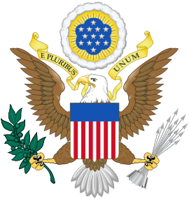

Welcome to U.S.A
Information about the U.S.A
Symbols of America

Coat of arms
Hymn
Brief information about America
The United States of America (USA or U.S.A.), commonly known as the United States (US or U.S.) or America, is a country primarily located in North America, between Canada and Mexico. It is a liberal democracy and republic of 50 federated states, a federal capital district (Washington, D.C.), and 326 Indian reservations that overlap with state boundaries. Outside the union of states, it asserts sovereignty over five major unincorporated island territories and various uninhabited islands.[i] The country has the world's third-largest land area,[c] largest maritime exclusive economic zone, and the third-largest population (over 334 million).
Etymology
The first documentary evidence of the phrase "United States of America" dates back to a letter from January 2, 1776, written by Stephen Moylan, a Continental Army aide to General George Washington, to Joseph Reed, Washington's aide-de-camp. Moylan expressed his desire to go "with full and ample powers from the United States of America to Spain" to seek assistance in the Revolutionary War effort.[20][21] The first known publication of the phrase "United States of America" was in an anonymous essay in The Virginia Gazette newspaper in Williamsburg, on April 6, 1776.
History
The first inhabitants of North America migrated from Siberia across the Bering land bridge at least 12,000 years ago; the Clovis culture, which appeared around 11,000 BC, is believed to be the first widespread culture in the Americas. Over time, indigenous North American cultures grew increasingly sophisticated, and some, such as the Mississippian culture, developed agriculture, architecture, and complex societies. Indigenous peoples and cultures such as the Algonquian peoples, Ancestral Puebloans, and the Iroquois developed across the present-day United States. Native population estimates of what is now the United States before the arrival of European immigrants range from around 500,000 to nearly 10 million.
U.S.A states
- Alabama
- Alaska
- Arizona
- Arkansas
- California
- Colorado
- Connecticut
- Delaware
- Florida
- Georgia
- Hawaii
- Idaho
- Illinois
- Indiana
- Kansas
- Kentucky
- Lousiana
- Lowa
- Maine
- Maryland
- Massachusetts
- Michigan
- Minnesota
- Mississipi
- Missouri
- Montana
- Nebraska
- Nevada
- New Hampshire
- New Jersey
- New Mexico
- New York
- North Carolina
- North Dakota
- Tennessee
- Texas
- Utah
- Vermont
- Virginia
- Washington
- West Virginia
- Wisconsin
- Wyoming